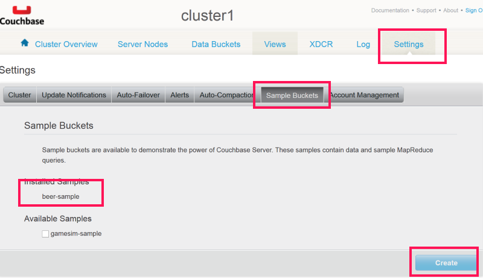

Working with view queries
You can use MapReduce views to create queryable secondary and composite indexes in Couchbase Server.
The Couchbase .NET SDK offers access to all features of the Couchbase View API. Note that before working with the API, a design document and View must exist on the Couchbase Server you are targeting.
For these examples, we will use the design documents and views that come with the beer-sample sample bucket that can be installed directly from the Couchbase Management Console. To install the sample buiket, navigate to the console, log in, and click the Settings tab. After you have done this, click Sample Buckets. Under Available Samples, select the beer-sample check box. Then click Create.

After you have the beer-sample sample data and bucket installed, you can run some queries. The beer-sample comes with a design document called beer and some views defined: brewery_beers, by_country, and by_location. We use these in the next several examples.
First a very simple query that fetches the results of the brewery_beers view. The view definition looks like this:
function(doc, meta) {
switch (doc.type) {
case "brewery":
emit([meta.id]);
break;
case "beer":
if (doc.brewery_id) {
emit([doc.brewery_id, meta.id]);
}
break;
}
}
What this does is create secondary indexes for every document with a type of brewery and a composite index for every document of type beer. When this map function runs, it returns a list of all of these keys. Here is an example of querying this view using the Couchbase .NET SDK:
var query = bucket.CreateQuery("beer", "brewery_beers”, false).
Limit(5);
var result = bucket.Query<dynamic>(query);
foreach (var row in result.Rows)
{
Console.WriteLine(row);
}
First, an IViewQuery object is created by calling the factory method IBucket.CreateQuery() and passing in false to indicate that we want to target a production view. Then we specify the design document to use, the view on the design document that we want to query, and the limit on the number of rows to return. We then use the IBucket.Query() method to execute the query and then iterate through the results.
IViewQuery is a fluent interface that allows a series of methods to be chained together. Internally, it’s creating the HTTP request URL that will be sent the server and executed. Besides the methods defined in the query above, which are the minimal set of methods you must call to make a query, there are several others. The following table lists select IViewQuery methods. For a complete list of IViewQuery methods, the parameters they take and their return types, refer to the API Reference.
| Name | Description |
|---|---|
| From | Specify the bucket and the design document to query |
| Bucket | Specify the bucket to query |
| DesignDoc | Specify the design document to query |
| View | Specify the view to query |
| Skip | The number of records to skip |
| Stale | Whether or not to return stale data or force an index: StaleMode.False | Ok | UpdateAfter |
| Asc | Sort in ascending order by key |
| Desc | Sort in descending order by key |
| Group | Groups the results from the reduce function into a single row |
| GroupLevel | Specify the level of grouping to use |
| Limit | The maximum number of rows to return |
| Reduce | True to use the reduce method |
| ConnectionTimeout | The number of seconds to wait before timing out a request |
| RawUri | Returns the internally created HTTP request URL |
The IBucket.Query() method returns an object implementing the IViewResult<T> interface. The following table lists some of the members of the IViewResult<T> interface.
| Name | Description |
|---|---|
| Error | The error message returned by the View engine |
| Message | If the query failed as the result of a server error, a message indicating the reason why |
| Rows | A List<T> of T, which is the result of the query |
| Success | true if the query completed successfully |
| StatusCode | The HTTP status code returned by the server |
| TotalRows | The total rows available; may not match the exact rows returned if Limit is called. |
You can iterate over the Rows property if the query was successful or check the Message and Error properties if Success returns false to determine the reason why the query failed.